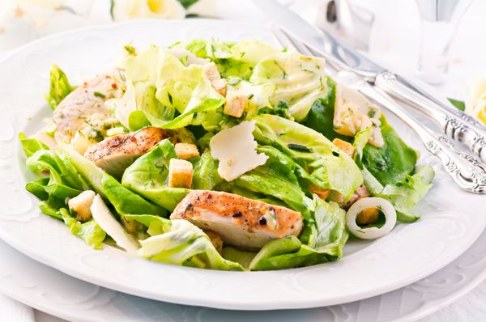

Salade césar
Home

Description :
La salade César (en anglais : Caesar salad ; en espagnol : ensalada César ; en italien : Caesar salad) est une recette de cuisine de salade composée de la cuisine américaine, traditionnellement préparée en salle à côté de la table, à base de laitue romaine, œuf dur, croûtons, parmesan et de sauce César à base de parmesan râpé, huile d'olive, pâte d'anchois, ail, vinaigre de vin, moutarde, jaune d'œuf et sauce Worcestershire
Ingrédients :
- Huile
- Laitue
- Parmesan
- Pain
- Sel
- Poivre
- Tabasco
- Moutarde
- Oeuf
- Parmesan
- Câpre
- Citron
- Ail
Étapes
- Faites dorer le pain, coupé en cubes, 3 min dans un peu d'huile.
- Déchirez les feuilles de romaine dans un saladier, et ajoutez les croûtons préalablement épongés dans du papier absorbant.
- Préparez la sauce : Faites cuire l'oeuf 1 min 30 dans l'eau bouillante, et rafraîchissez-le.
- Cassez-le dans le bol d'un mixeur et mixez, avec tous les autres ingrédients; rectifiez l'assaissonnement et incorporez à la salade.
- Décorez de copeaux de parmesan, et servez.
- Bon appétit